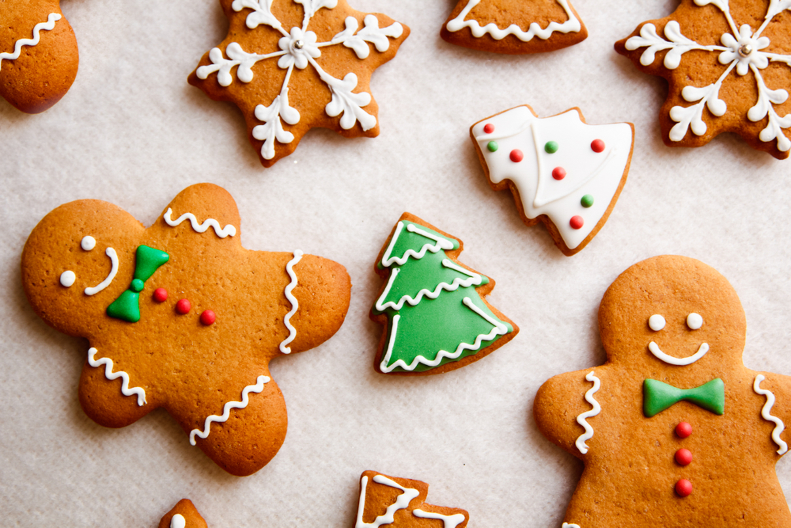

Gingerbread Cookies

Description
Put your feet up and enjoy these moreish gingerbread cookies with a cuppa, made with aromatic cloves, ginger, cinnamon and rich black treacle
Ingredients
- 120g unsalted butter, softened
- 1½ tbsp black treacle
- 170g soft light brown sugar
- ½ tsp fine sea salt
- 1 medium egg
- 200g plain flour
- ¼ tsp bicarbonate of soda
- ¼ tsp ground cloves
- 1½ tsp ground ginger
- ½ tsp ground cinnamon
- 60g golden caster sugar
Steps
- Beat together the butter, treacle, brown sugar and salt in a large mixing bowl. Add the egg, then beat through all of the remaining dry ingredients apart from the caster sugar. Chill the mixture in the fridge for 1 hr.
- Heat the oven to 200C/180C fan/gas 4. Line two baking sheets with baking parchment. Roll the mixture into 20 even-sized balls (weighing for accuracy, if you like). Tip the caster sugar onto a small plate, then add each ball and roll around to coat. Space each ball out on the baking sheets. Bake for 9-10 mins until golden brown. Leave to cool completely on a wire rack.
Source
Main Page